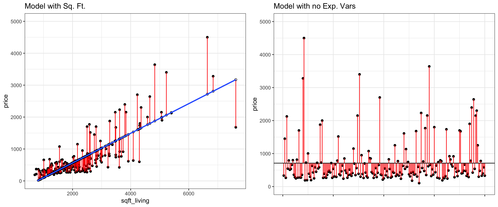
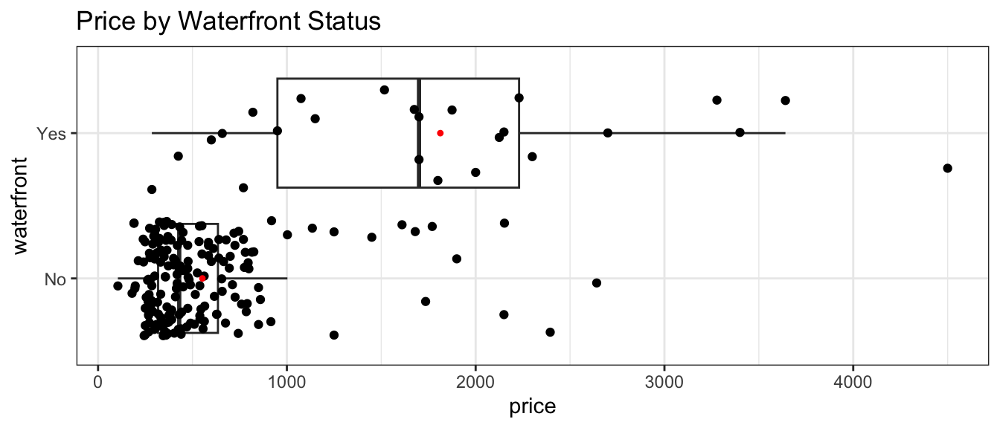
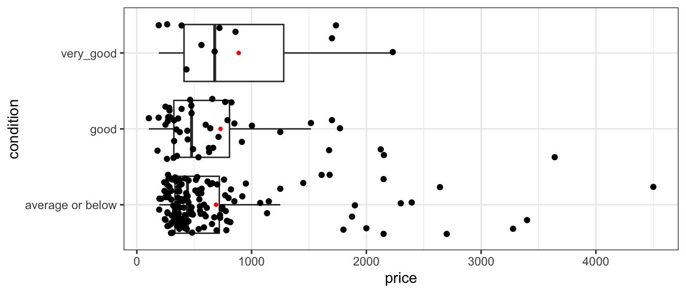
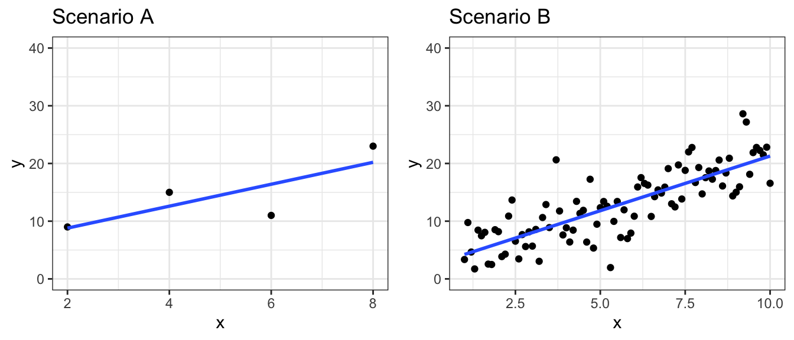
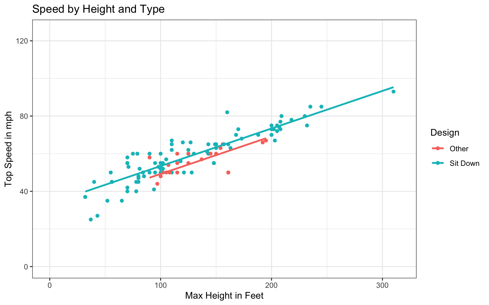

ggplot(data=Houses, aes(x=sqft_living, y=price)) +
geom_point() +
stat_smooth(method="lm", se=FALSE) +
ggtitle("Price and Living Space") +
ylab("Price") +
xlab("Living Space in sq. ft. ") +
theme_bw()
Conceptual Learning Outcomes
4. Use regression models to calculate estimates and predictions.
5. Interpret coefficient estimates in regression models in context.
6. Calculate and interpret regression sums of squares SSR, SSM, and SST, and coefficient of determination,\(R^2\).
7. Calculate and interpret F-statistics for comparing models.
8. Draw conclusions about model estimates, \(R^2\), and F-statistics using graphical representations of data.
9. Explain the least squares estimation process.
Computational Learning Outcomes
E. Fit statistical models in R and interpret results.
In this section, we’ll use statistical models to predict the prices of houses in King County, WA.
In a statistical model,
The variable we are trying to predict (price) is called the response variable (denoted \(Y\)).
Variable(s) we use to help us make the prediction is(are) called explanatory variables (denoted \(X\)). These are also referred to as predictor variables or covariates.
In this section, we’ll attempt to predict the price of a house, using information about its size (in square feet), and whether or not it is on the waterfront. The price is our response variable, while size and waterfront location are explanatory variables.
Categorical variables are variables that take on groups or categories, rather than numeric values, for example, whether or not the house is on the waterfront.
Quantitative variables take on meaningful numeric values, for example the number of square feet in the house.
We’ll first predict the price of the house, using the number of square feet of living space as our explanatory variable.
A model with a single quantitative explanatory variable is called a simple linear regression (SLR) model.
We’ll assume that price changes linearly with square feet, and fit a trend line to the data.
ggplot(data=Houses, aes(x=sqft_living, y=price)) +
geom_point() +
stat_smooth(method="lm", se=FALSE) +
ggtitle("Price and Living Space") +
ylab("Price") +
xlab("Living Space in sq. ft. ") +
theme_bw()
The model equation is
\[ \widehat{\text{Price}} = b_0 + b_1\times\text{Sq.Ft.} \]
The symbol over the response variable (Price) is read as “hat”, and means “predicted price”.
We fit the model in R, using the lm (linear model) command. The output gives the estimates of \(b_0\) and \(b_1\).
M_House_price_sqft <- lm(data=Houses, price~sqft_living)
M_House_price_sqft
Call:
lm(formula = price ~ sqft_living, data = Houses)
Coefficients:
(Intercept) sqft_living
-364.8497 0.4641 The estimates are \(b_0=\) -364.85 and \(b_1=\) 0.46.
The model equation is
\[ \widehat{\text{Price}} = -364.85 + 0.46\times\text{Sq.Ft.} \]
Interpretations
The intercept \(b_0\) represents the expected (or average) value of the response variable, when the explanatory variable is equal to 0. This is not always a meaningful interpretation in context.
The slope \(b_1\) represents the expected (or average) change in the response variable for each one-unit increase in the explanatory variable.
On average, a house with 0 square feet is expected to cost -365 thousand dollars. This is not a sensible interpretation, as there are no houses with 0 square feet.
For each additional square foot in living space, the price of the house is expected to increase by 0.46 thousand dollars (or $460).
Prediction
We can predict the price of a house with a given number of square feet by plugging the square feet into the model equation.
The predicted price of a house with 2,000 square feet is
\[ \widehat{\text{Price}} = -364.85 + 0.46\times 2000 = 563.41{ \text{ thousand dollars}} \]
We can calculate this directly in R using the predict command.
predict(M_House_price_sqft, newdata=data.frame(sqft_living=2000)) 1
563.4116 We should only try to make predictions on houses within the range of the observed data. Since the largest house in the dataset is 8,000 square feet we should not try to predict the price of house with 10,000 square feet.
Next, we’ll predict the price of a house based on whether or not it is on the waterfront.
The boxplot shows the distribution of prices for waterfront and nonwaterfront houses. The red dots indicate the mean.
ggplot(data=Houses, aes(x=waterfront, y=price)) + geom_boxplot() +
ggtitle("House Price by Waterfront Status") +
xlab("Waterfront") +
stat_summary(fun.y="mean", geom="point", shape=20, color="red", fill="red") +
ylab("Price") +
coord_flip() +
theme_bw() The table displays the price summary by waterfront status.
Houses_Grouped_Summary <- Houses %>% group_by(waterfront) %>%
summarize(Mean_Price = mean(price, na.rm=TRUE),
Median_Price = median(price, na.rm=TRUE),
StDev_Price = sd(price, na.rm = TRUE),
Number_of_Houses = n())
kable(Houses_Grouped_Summary)| waterfront | Mean_Price | Median_Price | StDev_Price | Number_of_Houses |
|---|---|---|---|---|
| No | 552.6609 | 430 | 409.7904 | 175 |
| Yes | 1812.9540 | 1700 | 1073.8480 | 25 |
The model equation is
\[ \widehat{\text{Price}} = b_0 + b_1\times\text{Waterfront} \]
The waterfront variable takes on value of 1 if the house is on the waterfront, and 0 otherwise.
M_House_price_wf <- lm(data=Houses, price~waterfront)
M_House_price_wf
Call:
lm(formula = price ~ waterfront, data = Houses)
Coefficients:
(Intercept) waterfrontYes
552.7 1260.3 The estimates are \(b_0=\) 552.66 and \(b_1=\) 1260.29.
The model equation is
\[ \widehat{\text{Price}} = 552.66 + 1260.29\times \text{Waterfront} \]
Interpretations
The intercept \(b_0\) represents the expected (or average) value of the response variable in the “baseline” category (in this case non-waterfront).
The coefficient \(b_1\) represents the expected (or average) difference in response between the a category and the “baseline” category.
On average, a house that is not on the waterfront is expected to cost rM_House_price_wf_b0` thousand dollars.
On average a house that is on the waterfront is expected to cost 1260.29 thousand (or 1.26029 million) dollars more than a house that is not on the waterfront.
Prediction
We can predict the price of a house with a given number of square feet by plugging in either 1 or 0 for the waterfront variable.
The predicted price of a house on the waterfront is:
\[ \widehat{\text{Price}} = 552.66 + 552.66\times 1 = 1812.95{ \text{ thousand (or 553.92 million)}} \]
The predicted price of a house not on the waterfront is:
\[ \widehat{\text{Price}} = 552.66 + 552.66\times 0 = 552.66{ \text{ thousand}} \]
Calculations in R:
predict(M_House_price_wf, newdata=data.frame(waterfront="Yes")) 1
1812.954 predict(M_House_price_wf, newdata=data.frame(waterfront="No")) 1
552.6609 Notice that the predicted prices for each category correspond to the average price for that category.
We’ve used square feet and waterfront status as explanatory variables individually. We can also build a model that uses both of these variables at the same time.
A model with two or more explanatory variables is called a multiple regression model.
The model equation is
\[ \widehat{\text{Price}} = b_0 + b_1\times\text{Sq. Ft} + b_2\times\text{Waterfront} \]
For a house not on the waterfront, the \(\text{Waterfront} = 0\) so the model equation is:
\[ \widehat{\text{Price}} = b_0 + b_1\text{Sq. Ft} \]
For a house on the waterfront, \(\text{Waterfront} = 1\), so the model equation is:
\[ \widehat{\text{Price}} = (b_0 + b_2) + b_1\times\text{Sq. Ft} \]
Notice that the slope is the same, regardless of whether the house is on the waterfront (\(b_1\)). The intercept, however, is different (\(b_0\) for houses not on the waterfront, and \(b_0 + b_2\) for houses on the waterfront). Thus, the model assumes that price increases at the same rate, with respect to square feet, regardless of whether or not it is on the waterfront, but allows the predicted price for a waterfront house to differ from a non-waterfront house of the same size.
The geom_parallel_slopes(se=FALSE) command adds regression lines with a common slope. This function is part of the moderndive R package.
Plot_House_price_sqft_wf <- ggplot(data=Houses, aes(x=sqft_living, y=price, color=waterfront)) +
geom_point() +
theme_bw() +
geom_parallel_slopes(se=FALSE)
Plot_House_price_sqft_wfWe fit the model in R.
M_House_price_sqft_wf <- lm(data=Houses, price~sqft_living+waterfront)
M_House_price_sqft_wf
Call:
lm(formula = price ~ sqft_living + waterfront, data = Houses)
Coefficients:
(Intercept) sqft_living waterfrontYes
-269.5118 0.3819 760.2965 The model equation is
\[ \widehat{\text{Price}} = -269.51 + 0.38\times\text{Sq. Ft} + 760.3\times\text{Waterfront} \]
Interpretations
The intercept \(b_0\) represents the expected (or average) value of the response variable, when all quantitative explanatory variables are equal to 0, and all categorical variables are in the “baseline” category. This interpretation is not always sensible.
We interpret coefficients \(b_j\) for categorical or quantitative variables, the same way we would in a regression model with only one variable, but we need to state that all other explanatory variables are being held constant.
On average, a house that is not on the waterfront with 0 square feet is expected to cost -269.51 thousand dollars. This is not a sensible interpretation, since there are no houses with 0 square feet.
For each 1-square foot increase in size, the price of a house is expected to increase by 0.38 thousand (or 380) dollars, assuming waterfront status is the same. Equivalently, for each 100-square foot increase in size, the price of a house is expected to increase by 38 thousand dollars, assuming waterfront status is the same.
On average, a house on the waterfront is expected to cost 760.3 thousand dollars more than a house that is not on the waterfront, assuming square footage is the same.
Question for thought: Notice that the estimated difference in price between waterfront and non-waterfront houses, after accounting for size, is 760.3, which is less than the estimated difference when we did not account for size, which was 1260.29. Why is this? Hint: look at the scatterplot displaying house price, size, and waterfront status.
Prediction
The predicted price of a 2,000 square foot house on the waterfront is:
\[ \widehat{\text{Price}} = -269.51 + 0.38\times2000 + 760.3\times1 = 1254.66{ \text{ thousand (or 1.25 million)}} \]
The predicted price of a 2,000 square foot house not on the waterfront is:
\[ \widehat{\text{Price}} = -269.51 + 0.38\times2000 = 494.37{ \text{ thousand}} \]
Calculations in R:
predict(M_House_price_sqft_wf, newdata=data.frame(waterfront="Yes", sqft_living=2000)) 1
1254.665 predict(M_House_price_sqft_wf, newdata=data.frame(waterfront="No", sqft_living=2000)) 1
494.3681 Finally, we’ll consider a model that makes use of no explanatory variables at all. Although this might seem silly, its relevance will be seen in the next section.
The histogram shows the distribution of prices, without any information about explanatory variables. The mean price is indicated in red.
ggplot(data=Houses, aes(x=price)) +
geom_histogram(fill="lightblue", color="white") +
ggtitle("Distribution of House Prices") +
theme_bw() +
xlab("Price") +
ylab("Frequency") +
geom_point(aes(x=mean(Houses$price), y=0), color="red", shape=24, fill="red")The mean, median, and standard deviation in prices is shown below.
library(knitr)
kable(Houses_Summary)| Mean_Price | Median_Price | StDev_Price | Number_of_Houses |
|---|---|---|---|
| 710.1975 | 457.8125 | 678.6034 | 200 |
Suppose we know that a house sold in King County during this time, and want to predict the price, without knowing anything else about the house.
The best we can do is to use the mean price for our prediction. (We’ll define what we mean by “best” later in the chapter.)
The model equation is
\[ \widehat{\text{Price}} = b_0 \]
We fit a statistical model in R using the lm command.
M_House_price_0 <- lm(data=Houses, price ~ 1) # when there are no explanatory variables, use ~1
M_House_price_0
Call:
lm(formula = price ~ 1, data = Houses)
Coefficients:
(Intercept)
710.2 The model equation is
\[ \widehat{\text{Price}} = 710.2 \]
Interpretation
The expected price of a house in King County is 710.2 thousand dollars.
Predictions
Without knowing anything about the house other than that it is in King County, WA we would expect it to cost 710.2 thousand dollars.
We’ve seen four different models for predicting house price. We want to be able to quantify how well the models are predicting prices, and determine which best explain variability in price.
Of course we won’t know the price of the house we are trying to predict, so we can’t be sure how close or far our prediction is. We do, however, know the prices of the original 200 houses in our dataset. We can assess the models by measuring how far the actual prices of the 200 houses differ from the predicted (mean) price, and by calculating the proportion of total variation in sale price explained by each model.
Let’s start with our most basic model, which uses no explanatory variables and predicts the price of each simply using the average of all houses in the dataset.
We measure the total variability in the response variable by calculating the square difference between each individual response value and the overall average. This quantity is called the total sum of squares (SST).
\[ \text{SST} = \displaystyle\sum_{i=1}^n (y_i - \bar{y})^2 \]
The plot below shows a horizontal line at the mean sale price (710.2 thousand). The points represent prices of individual houses, and the red lines represent the differences between the price of each house and the overall average.
We see that the majority of the houses are priced below the overall average, but some houses are much more expensive than average. A property of averages is that the positive and negative differences from the average will always cancel out and sum to zero.
The first three houses in the dataset are shown below.
First3Houses <- Houses %>% select(ID, price, waterfront, sqft_living) %>% head(3)
kable(First3Houses)| ID | price | waterfront | sqft_living |
|---|---|---|---|
| 90 | 335.0 | No | 1030 |
| 126 | 1450.0 | No | 2750 |
| 300 | 267.5 | No | 1590 |
\[ \begin{aligned} \text{SST} & = \displaystyle\sum_{i=1}^{100} (y_i - \bar{y})^2 \\ & = (335- 710)^2 + (1450- 710)^2 + (1450- 710)^2 + \ldots \end{aligned} \]
We could calculate SST by hand for small datasets. For larger datasets, we’ll use R to perform the calculation.
meanprice <- mean(Houses$price) #calculate mean price
SST <- sum((Houses$price - meanprice)^2) ## calculate SST
SST[1] 91640004Or, equivalently,
SST_M_House_price <- sum((M_House_price_0$resid)^2)
SST_M_House_price[1] 91640004By itself, the size of SST does not have much meaning. We cannot say whether a SST value like the one we see here is large or small, since it depends on the size and scale of the variable being measured. An SST value that is very large in one context might be very small in another.
SST does, however, give us a baseline measure of the total variability in the response variable. We’ll assess the performance of a model with a given explanatory variable by measuring how much of this variability the model accounts for.
Now let’s consider our model that uses the size of the house in square feet as the explanatory variable. The figure on the left shows difference between actual and predicted prices, using this linear model. We compare the size of the differences to those resulting from the basic model that does not use any explanatory variables, and predicts each price using the overall average (shown on the right).
P_Resid_M_House_price_sqft <- ggplot(data=Houses, aes(x = sqft_living, y = price)) + geom_point() +
geom_segment(aes(xend = sqft_living, yend = M_House_price_sqft$fitted.values), color="red") +
geom_point(aes(y = M_House_price_sqft$fitted.values), shape = 1) +
stat_smooth(method="lm", se=FALSE) + ylim(c(0,5000)) +
theme_bw() 
Notice that the red lines are shorter in the figure on the left, indicating the predictions are closer to the actual values.
The difference between the actual and predicted values is called the residual. The residual for the \(ith\) case is
\[ r_i = (y_i-\hat{y}_i) \]
We’ll calculate the residuals for the first three houses in the dataset, shown below.
kable(First3Houses)| ID | price | waterfront | sqft_living |
|---|---|---|---|
| 90 | 335.0 | No | 1030 |
| 126 | 1450.0 | No | 2750 |
| 300 | 267.5 | No | 1590 |
The model equation is
\[ \widehat{\text{Price}} = -364.85 + 0.46\times \text{Sq. Ft} \]
The predicted prices for these three houses are:
\[ \widehat{\text{Price}_1} = -364.85 + 0.46\times 1030 = 113.2 \text{ thousand dollars} \]
\[ \widehat{\text{Price}_2} = -364.85 + 0.46\times 2750 = 911.5 \text{ thousand dollars} \]
\[ \widehat{\text{Price}_3} = -364.85 + 0.46\times 1590 = 373.1 \text{ thousand dollars} \]
To calculate the residuals, we subtract the predicted price from the actual price.
\[r_1 = y_1-\hat{y}_1 = 335 - 113.2 = 222 \text{ thousand dollars}\]
\[r_2 = y_2-\hat{y}_2 = 1450 - 911.5 = 538 \text{ thousand dollars}\]
\[r_3 = y_3-\hat{y}_2 = 267.5 - 373.1 = -106 \text{ thousand dollars}\]
Positive residuals indicate that the house sold for more than the model predicted, while negative residuals mean the house sold for less than the model predicted.
The predicted values and residuals from a model can be calculated automatically in R. The predicted values and residuals for the first 3 houses are shown below.
Predicted <- predict(M_House_price_sqft)
head(Predicted, 3) 1 2 3
113.2049 911.5096 373.1180 Residual <- M_House_price_sqft$residuals
head(Residual, 3) 1 2 3
221.7951 538.4904 -105.6180 The sum of squared residuals (SSR) measures the amount of unexplained variability in the response variable after accounting for all explanatory variables in the model.
\[ \text{SSR} = \displaystyle\sum_{i=1}^{n}(y_i-\hat{y}_i)^2. \]
Note that SSR is similar to SST, except we subtract the model’s predicted values, rather than the overall average. In the special case of a model with no explanatory variables, the predicted values are equal to the overall average, so SSR is equal to SST.
We calculate SSR for the model using square feet as the explanatory variable.
\[ \begin{aligned} \text{SSR} & = \displaystyle\sum_{i=1}^{n}(y_i-\hat{y}_i)^2. \\ & = (335 - 113.2)^2 + (1450 - 911.5)^2 + (267.5 - 373.1)^2 + \ldots \end{aligned} \]
We can calculate the model’s SSR directly in R.
SSR_M_House_price_sqft <- sum(M_House_price_sqft$residuals^2)
SSR_M_House_price_sqft[1] 34576162SSR represents the amount of total variability in saleprice remaining after accounting for the house’s size in square feet.
The SSR=34576162.0524397 value is about one third of the SST value of 91640003.8131156. This means that about 2/3 of the total variability in sale price is explained by the model that accounts for sale price.
The difference (SST-SSR) represents the variability in the response variable that is explained by the model. This quantity is called the model sum of squares (SSM).
\[ \text{SSM} = \text{SST} - \text{SSR} \]
It can be shown that \(\text{SSM}=\displaystyle\sum_{i=1}^n(\hat{y}_i-\bar{y})^2\).
The proportion of total variability in the response variable explained by the model is called the coefficient of determination, denoted \(R^2\). We calculate this by dividing SSM by SST.
\[ R^2=\frac{SSM}{SST}= \frac{SST-SSR}{SST} \]
Example: For the model with square feet as the explanatory variable,
\[ SSM = SST-SSR = 91640004 - 34576162 = 57063842 . \]
\[ R^2 = \frac{34576162}{91640004}=0.62. \]
Approximately 62.3% of the total variability in sale price is explained by the model using square feet as the explanatory variable.

We calculate \(R^2\) directly in R.
summary(M_House_price_sqft)$r.squared[1] 0.6226958For models with a single quantiative explanatory varible, the coefficient of determination is equal to the square of the correlation coefficient \(r\), discussed in Chapter 1.
ggplot(data=Houses, aes(x=sqft_living, y=price)) +
geom_point() +
theme_bw() +
stat_smooth(method="lm", se=FALSE) +
xlab("Square Feet") +
ylab("Price (in thousands)")
For linear models with a single quantitative variable, the linear correlation coefficient \(r=\sqrt{R^2}\), or \(r=-\sqrt{R^2}\) (with sign matching the sign on the slope of the line), provides information about the strength and direction of the linear relationship between the variables.
\(-1 \leq r \leq 1\), and \(r\) close to \(\pm1\) provides evidence of strong linear relationship, while \(r\) close to 0 suggests linear relationship is weak.
cor(Houses$price, Houses$sqft_living)[1] 0.7891107There is a positive and fairly strong relationship between price and square feet of a house.
While the correlation coefficient, \(r\) is equal to the square root of \(R^2\) in the simple case of a model with one quantitative explanatory variable and a quantitative response variable, \(R^2\) has much broader application, as \(r\) is defined only for models with one quantitative explanatory variable and a quantitative response, while \(R^2\) is relevant for any linear model with a quantitative response variable.
We can similarly calculate the proportion of variability explained by the model using waterfront as an explanatory variable.
Recall that in this model, the predicted price of a house with a waterfront is given by the average price of all waterfront houses, and the predicted price of a non-waterfront house is given by the average price of all non-waterfront houses.
We can calculate residuals using these predicted values, and compare them to the residuals resulting from a model with no explanatory variables, which uses the overall average price for all predictions.
The left two figures show the residuals resulting from a model that accounts for waterfront status. The figure on the right shows the residuals resulting from the model with no explanatory variables.

Notice that after accounting for waterfront status, the differences between observed and predicted values are bigger than they were in the model that accounted for square feet, though not as big as for the model that doesn’t use any explanatory variables.
We use R to calculate SSR for the waterfront model.
SSR_M_House_price_wf <- sum(M_House_price_wf$residuals^2)
SSR_M_House_price_wf[1] 56895095\[ SSM = SST-SSR = 91640004 - 56895095 = 34744909. \]
\[ R^2 = \frac{34744909}{91640004}=0.38. \]
Approximately 37.9145647% of the total variability in sale price is explained by the model using waterfront status as the explanatory variable.

We calculate \(R^2\) directly in R.
summary(M_House_price_wf)$r.squared[1] 0.3791456We’ve seen at the model using square feet accounts for about 2/3 of the total variability in house prices, while the model using waterfront status accounts for about 1/3 of the total variability. Let’s see if we can do better by using both variables together.
The left figure shows the residuals resulting from a model that accounts for both waterfront status and square feet. The figure on the right shows the residuals resulting from the model with no explanatory variables.
We use R to calculate SSR for the waterfront model.
SSR_M_House_price_sqft_wf <- sum(M_House_price_sqft_wf$residuals^2)
SSR_M_House_price_sqft_wf[1] 23720774\[ SSM = SST-SSR = 91640004 - 23720774 = 67919230. \]
\[ R^2 = \frac{67919230}{91640004}=0.74. \]
Approximately 74.1152631% of the total variability in sale price is explained by the model using square feet and waterfront status as the explanatory variables.
We calculate \(R^2\) directly in R.
summary(M_House_price_sqft_wf)$r.squared[1] 0.7411526Including both square feet and waterfront status allows us to explain more variability in sale price than models that include one but not both of these variables.
We’ve seen that a multiple regression model that accounts for both square feet and whether or not the house is on the waterfront explains more variability in price than a model with only one of those variables. We can consider adding additional variables to the model to try to even better explain variability with price.
Let’s consider adding the age of the house to the model.
The model equation is
\[ \widehat{\text{Price}} = b_0 + b_1\times\text{Sq. Ft} + b_2\times\text{Waterfront} + b_3\times\text{Age} \]
Since we now have two quantitative and one categorical explanatory variable, in addition to our response variable, it is difficult to produce a graph that would visualize this model. We can, however, fit the model in R and calculate predicted values as well as model sums of squares, just as we’ve done before.
Estimated model coefficients are shown below.
M_House_price_sqft_wf_age <- lm(data=Houses, price ~ sqft_living + waterfront + age)
M_House_price_sqft_wf_age
Call:
lm(formula = price ~ sqft_living + waterfront + age, data = Houses)
Coefficients:
(Intercept) sqft_living waterfrontYes age
-353.1583 0.3942 733.2522 1.4212 The age coefficient estimate \(b_3\) tells us that for each additional year in age, the expected price is expected to increase by 1.4 thousand dollars, assuming square feet and waterfront status are held constant. This is not a very large change.
We can calculate predicted prices, residuals, SSR, SSM, and \(R^2\) the same way we did for the previous models, but let’s rely on R for these calculations.
SSR:
SSR_M_House_price_sqft_wf_age <- sum((M_House_price_sqft_wf_age$residuals)^2) |>round(1)
SSR_M_House_price_sqft_wf_age[1] 23436092SSM:
SSM_M_House_price_sqft_wf_age <- SST_M_House_price - SSR_M_House_price_sqft_wf_age |>round(1)
SSM_M_House_price_sqft_wf_age[1] 68203912\(R^2\)
summary(M_House_price_sqft_wf_age)$r.squared[1] 0.7442592Recall that the model with square feet and waterfront, but not age, as explanatory variables had an \(R^2\) value of 0.7411526. Adding age to the model only resulted in a tiny increase in \(R^2\), meaning that age only explains a very small percentage of the variability in price that was not explained by size and waterfront status. Thus, it may not be beneficial to add age to a model the model.
When a new variable is added SSR will never increase and \(R^2\) will never decrease. Thus, adding even unimportant variables typically lead to small decreases in \(R^2\). This does not necessarily mean we should add these variables. For one, thing this makes the model harder to interpret. It’s also true that making a model more complex by adding additional variables makes it more prone to a phenomenon called “overfitting.” This means that the model starts modeling random noise, rather than true relationships in the data it was built on (in this case, the 200 houses), causing it to perform worse when predicting new houses than a simpler model with fewer variables would. We’ll look more at overfitting later in the course.
Sometimes, it can be good to include a variable in a model even if it only leads to a small increase in \(R^2\). If we were interested in drawing and reporting conclusions on the relationship between the age and expected price of a house, it would be worth including age in the model, so we can report that it does not appear to make much difference. This result might be surprising and interesting in and of itself. There is no single correct model for a given set of data. We should choose models based on relationships we see in the data, as well as the research question(s) we are interested in answering.
\[\text{Total Variability in Response Var.}= \text{SST} =\displaystyle\sum_{i=1}^n(y_i-\bar{y})^2\]
\[ \text{SSR} = \text{Variability Remaining}=\displaystyle\sum_{i=1}^n(y_i-\hat{y}_i)^2 \]
\[ \text{SSM} = \text{SST} - \text{SSR} \]
\[R^2=\frac{\text{Variability Explained by Model}}{\text{Total Variability}}=\frac{\text{SSM}}{\text{SST}} =\frac{\displaystyle\sum_{i=1}^n(\hat{y}_i-\bar{y})^2}{\displaystyle\sum_{i=1}^n(y_i-\bar{y})^2}\]
Note that some texts use different abbreviations than the ones used here. When working with resources outside this class, be sure to carefully check the notation being used.
For the model with a single quantitative explanatory variable.
Model with a single categorical explanatory variable with 3 categories:
Blue Area = Total Variability (SST)
Red Area = Variability Remaining Unexplained by Model (SSR)
Blue Area - Red Area = Variability Explained by Model (SSM)
\(R^2 = \frac{\text{Area of Blue Squares} - \text{Area of Red Squares}}{\text{Area of Blue Squares}} = \frac{\text{SST}-\text{SSR}}{\text{SST}}= \frac{\text{SSM}}{\text{SST}}\)
| Model | Variables | Unexplained Variability | Variability Explained | \(R^2\) |
|---|---|---|---|---|
| 0 | None | 91640004 | 0 | 0 |
| 1 | Sq. Ft. | 34576162 | 57063842 | 0.623 |
| 2 | Waterfront | 56895095 | 34744909 | 0.379 |
| 3 | Sq. Ft. and Waterfront | 23720774 | 67919230 | 0.741 |
| 4 | Sq. Ft., Waterfront, and Age | 23436092 | 68203912 | 0.744 |
Comments on \(R^2\):
\(R^2\) will never decrease when a new variable is added to a model.
This does not mean that adding more variables to a model always improves its ability to make predictions on new data.
\(R^2\) measures how well a model fits the data on which it was built.
It is possible for a model with high \(R^2\) to “overfit” the data it was built from, and thus perform poorly on new data. We will discuss this idea extensively later in the course.
On some datasets, there is a lot of “natural” variability in the response variable, and no model will achieve a high \(R^2\). That’s okay. Even a model with \(R^2 = 0.10\) or less can provide useful information.
The goal is not to achieve a model that makes perfect predictions, but rather to be able to quantify the amount of uncertainty associated with the predictions we make.
In the preceding sections, we’ve seen 5 different models for predicting house price using some combination of square feet and waterfront status.
A model is defined to be a submodel of a larger model, if the larger model contains all of the model’s variables plus more.
| Model | Variables | Unexplained Variability | Variability Explained | \(R^2\) |
|---|---|---|---|---|
| 0 | None | 91640004 | 0 | 0 |
| 1 | Sq. Ft. | 34576162 | 57063842 | 0.623 |
| 2 | Waterfront | 56895095 | 34744909 | 0.379 |
| 3 | Sq. Ft. and Waterfront | 23720774 | 67919230 | 0.741 |
| 4 | Sq. Ft., Waterfront, and Age | 23436092 | 68203912 | 0.744 |
Model 1 is a submodel of Model 3, since all variables used in Model 1 are also used in Model 3.
Model 2 is also a submodel of Model 3.
Models 1, 2, and 3 are all submodels of Model 4.
Model 0 is a submodel of Models 1, 2, 3, and 4.
Models 1 and 2 are not submodels of each other, since Model 1 contains a variable used in Model 2 and Model 2 contains a variable not used in Model 1.
When one model is a submodel of another, we can compare the amount of variability explained by the models, using a technique known as ANalysis Of VAriance (ANOVA).
Reduced Model: \(\hat{y}_i = b_0 + b_1x_{i1} + b_2x_{i2} + \ldots + b_qx_{iq}\)
Full Model: \(\hat{y}_i = b_0 + b_1x_{i1} + b_2x_{i2} + \ldots + b_qx_{iq} + b_{q+1}x_{i{q+1}} \ldots + b_px_{ip}\)
p = # terms in Full Model, not including the intercept
q = # terms in Reduced Model, not including the intercept
n = number of observations
We calculate a statistic called F that measures the amount of variability explained by adding additional variable(s) to the model, relative to the total amount of unexplained variability.
\[ \begin{aligned} F &= \frac{\frac{\text{SSR}_{\text{Reduced}}-\text{SSR}_{\text{Full}}}{p-q}}{\frac{\text{SSR}_{\text{Full}}}{n-(p+1)}} \end{aligned} \]
Example 1
Let’s Calculate an ANOVA F-Statistic to compare Models 1 and 3. This will tell us whether adding information about whether or not a house is on the waterfront helps us predict the price, when compared to a model using only square feet of living space.
Reduced Model:
\[ \widehat{\text{Price}}= b_0+ b_1 \times\text{sqft\_living} \]
Full Model:
\[ \widehat{\text{Price}}= b_0+ b_1 \times\text{sqft\_living}+ b_2\times\text{Waterfront} \]
\[ \begin{aligned} F &= \frac{\frac{\text{SSR}_{\text{Reduced}}-\text{SSR}_{\text{Full}}}{p-q}}{\frac{\text{SSR}_{\text{Full}}}{n-(p+1)}} \\ &=\frac{\frac{23720773.8648291 - 34576162.0524397}{2-1}}{\frac{23720773.8648291}{200-(2+1)}} \\ & = 90.15 \end{aligned} \]
We can calculate the statistic directly in R, using the anova command.
anova(M_House_price_sqft_wf, M_House_price_sqft)$F[2] |>round(2)[1] 90.15An F-statistic of 90.15 is quite large and provides strong evidence that adding waterfront status to a model already including square feet helps better explain variability in sale price.
We previously saw that the model including both square feet and waterfront status had a \(R^2\) value considerably higher than the one including only square feet. This large F-statistic is further evidence of the benefit of using both variables in our model.
Example 2
We’ll calculate an F-statistic to compare Models 3 and 4. This can help us determine whether it is worthwhile to include age in a model that already includes sqaure feet and waterfront status.
Reduced Model: \[\widehat{\text{Price}}= b_0+ b_1 \times\text{sqft\_living} + b_2\times\text{Waterfront}\]
Full Model: \[\widehat{\text{Price}}= b_0+ b_1 \times\text{sqft\_living}+ b_2\times\text{Waterfront} + b_3\times\text{Age}\]
\[ \begin{aligned} F &= \frac{\frac{\text{SSR}_{\text{Reduced}}-\text{SSR}_{\text{Full}}}{p-q}}{\frac{\text{SSR}_{\text{Full}}}{n-(p+1)}} \\ &=\frac{\frac{23436092 - 23720773.8648291}{3-2}}{\frac{23720773.8648291}{200-(3+1)}} \\ & = 2.38 \end{aligned} \]
We can calculate the statistic directly in R, using the anova command.
anova(M_House_price_sqft_wf_age, M_House_price_sqft_wf)$F[2] |>round(2)[1] 2.38Now, the F-statistic is much smaller than we’ve seen before, indicating that adding age to the model does not help very much in explaining variability in price.
You might be wondering how large an F-statistic needs to be in order to merit using the larger model. This is a complicated question, which we’ll explore more in future chapters, but as a general rule, F-statistics larger than 4 typically provide evidence in favor of choosing the larger (full) model over the reduced one.
While F-statistics can be used for models with quantitative or categorical variables, they are often used to compare groups for a categorical explanatory variable.
An F-statistic compares the amount of variability between groups to the amount of variability within groups. Larger F-statistics indicate more variability between groups, rather than within groups, indicating stronger evidence of differences between groups.
In scenario 1, we notice considerable differences between the groups, relative to the amount of variability within groups. In this scenario, knowing the group an observation is in will help us predict the response for that group, so we should include account for the groups in our model. We would obtain a large F-statistic when comparing a model that includes group to one that contains only an intercept term.
In scenario 2, there is little difference between the overall averages in each group, and more variability between individual observations within each group. In a scenario like this, knowing the group an observation lies in does little to help us predict the response. In this scenario, predictions from a model that includes group as an explanatory variable would not be much better than those from a model that does not. Hence, we would obtain a small F-statistic.
M_df1_F <- summary(lm(data=df1, y~Group))$fstatistic[1]
M_df2_F <- summary(lm(data=df2, y~Group))$fstatistic[1]| Scenario 1 | Scenario 2 | |
|---|---|---|
| variation between groups | High | Low |
| variation within groups | Low | High |
| F Statistic | Large ($F=\(46.5970149) | Small (\)F=$M_df2_F) |
|
| Result | Evidence of Group Differences | No evidence of differences |
We’ll use F-statistics to compare the prices of waterfront houses to non-waterfront houses, and also to compare the three different conditions of houses.
Example 1: Price by Waterfront Status
The boxplot shows the distribution of houses in each category, and the table below it provides a numerical summary.
ggplot(data=Houses, aes(x=waterfront, y=price)) +
geom_boxplot(outliers=FALSE) +
geom_jitter() +
coord_flip() +
stat_summary(fun.y="mean", geom="point", shape=20, color="red", fill="red") +
theme_bw() + ggtitle("Price by Waterfront Status")
Cond_Tab <- Houses %>% group_by(waterfront) %>% summarize(Mean_Price = mean(price),
SD_Price= sd (price),
N= n())
kable(Cond_Tab)| waterfront | Mean_Price | SD_Price | N |
|---|---|---|---|
| No | 552.6609 | 409.7904 | 175 |
| Yes | 1812.9540 | 1073.8480 | 25 |
When measuring differences between groups for a categorical variable, we compare a model with the categorical variable to one with only an intercept term. In this case, the models are:
Reduced Model: \[\widehat{\text{Price}}= b_0\]
Full Model: \[\widehat{\text{Price}}= b_0+ b_1 \times\text{waterfront}\]
We’ll fit the model in R. The coefficient estimates for \(b_0\), \(b_1\) and \(b_2\) are shown below.
We previously calculated \(SSR_full\) to be
SSR_M_House_price_wf |> round(1)[1] 56895095For a model containing only an intercept term, like the reduced model, SSR is equal to SST.
SST_M_House_price[1] 91640004The F-statistic is
\[ \begin{aligned} F &= \frac{\frac{\text{SSR}_{\text{Reduced}}-\text{SSR}_{\text{Full}}}{p-q}}{\frac{\text{SSR}_{\text{Full}}}{n-(p+1)}} \\ &=\frac{\frac{91640003.8131156 - 56895095.2689966}{1-0}}{\frac{56895095.2689966}{200-(1+1)}} \\ & = 120.92 \end{aligned} \]
Confirming the calculation in R, we obtain
anova(M_House_price_wf, M_House_price_0)$F[2][1] 120.9154The F-statistic is very large, indicating strong efidence that waterfront status is associated with the price of a house, which is consistent with what we’ve observed in our plots as well as \(R^2\) calculation.
Example 2: Price by Condition
One variable in the houses dataset, which we haven’t looked at yet, is the condition of the house at the time of sale. The table shows the number of houses in either 1) very good, 2) good, or 3) average or below condition.
The boxplot shows the distribution of houses in each category, and the table below it provides a numerical summary.
ggplot(data=Houses, aes(x=condition, y=price)) +
geom_boxplot(outliers=FALSE) +
geom_jitter() +
coord_flip() +
stat_summary(fun.y="mean", geom="point", shape=20, color="red", fill="red") +
theme_bw()
Cond_Tab <- Houses %>% group_by(condition) %>% summarize(Mean_Price = mean(price),
SD_Price= sd (price),
N= n())
kable(Cond_Tab)| condition | Mean_Price | SD_Price | N |
|---|---|---|---|
| average or below | 690.1892 | 683.0578 | 142 |
| good | 729.0987 | 671.5967 | 47 |
| very_good | 887.7273 | 684.5189 | 11 |
Notice that while houses in very good condition are the most expensive, differences between the three conditions are not that large and there is a lot of variability within each condition group.
We’ll calculate an F-statistic for a model that includes condition, compared to a model with only an intercept term.
Reduced Model: \[\widehat{\text{Price}}= b_0\]
Full Model: \[\widehat{\text{Price}}= b_0+ b_1 \times\text{good condition}+ b_2\times\text{very good condition}\]
Notice that the equation includes separate variables for the “good” and “very” good conditions. These variables take on value 0 if the house is not in that condition, and 1 if the house is in that condition. Here, the “average or below” condition is considered the “baseline” category.
We’ll fit the model in R. The coefficient estimates for \(b_0\), \(b_1\) and \(b_2\) are shown below.
M_House_price_cond <- lm(data=Houses, price~condition)
M_House_price_cond
Call:
lm(formula = price ~ condition, data = Houses)
Coefficients:
(Intercept) conditiongood conditionvery_good
690.19 38.91 197.54 Interpretations
We calculate SSR for the full model.
SSR_M_House_price_cond <- sum(M_House_price_cond$residuals^2)
SSR_M_House_price_cond [1] 91219681Note that in this case, \(p=2\), since the full model includes terms for both good and very good conditions. For a categorical variable with \(g\) groups, there will always be \(g-1\) terms in the model equation, one for each category other than the baseline.
The F-statistic is
\[ \begin{aligned} F &= \frac{\frac{\text{SSR}_{\text{Reduced}}-\text{SSR}_{\text{Full}}}{p-q}}{\frac{\text{SSR}_{\text{Full}}}{n-(p+1)}} \\ &=\frac{\frac{91640003.8131156 - 91219680.6197368}{2-0}}{\frac{91219680.6197368}{200-(2+1)}} \\ & = 0.45 \end{aligned} \]
We perform the calculation directly in R.
anova(M_House_price_cond, M_House_price_0)$F[2][1] 0.4538695Notice that the F-statistic of 0.45 is considerably smaller than the F-statistics we’ve seen previously.
This indicates that adding condition to a model with no other explanatory variables doesn’t seem to help improve the model’s ability to account for variation in price. Put another way, there doesn’t appear to be much evidence of difference in price between houses in the different conditions. This is again consistent with our conclusion based on the very small change in \(R^2\) that we saw when adding condition to the model in the previous section.
We’ve seen that both \(R^2\) and the F-statistic give us ways of comparing models and determining whether explanatory variables help explain variability in the response.
You may be wondering why we need to calculate F-statistics when we already have \(R^2\) to answer these questions. Here we’ll look at an example to illustrate the relationship between the two, showing how they’re alike, as well as how they differ.
Shown below are are two different scatterplots displaying relationships between variables \(x\) and \(y\).
Which plot do you think displays a stronger relationship between \(x\) and \(y\)?

We calculate \(R^2\) values for linear models fit to both sets of data.
M_dfA <- lm(data=dfA, y1~x1)
summary(M_dfA)$r.squared [1] 0.6278261M_dfB <- lm(data=dfB, y~x)
summary(M_dfB)$r.squared[1] 0.6441707We see that the \(R^2\) values are approximately the same.
You might have thought, however, that Scenario B shows a stronger relationship, and this would seem reasonable. Scenario B has 91 observations, while Scenario A only has 4, hence Scenario B has more information justifying a relationship between the variables.
The \(R^2\) value captures only the strength of the relationship in the observed data, without accounting for the number of observations. In this section, we’ll look at a different statistic that can be used to assess the strength of relationships between variables in a model that, unlike \(R^2\), accounts for the sample size.
For each a model with explanatory variable \(x\) to one with only an intercept term.
Reduced Model: \[\widehat{y}= b_0\]
Full Model: \[\widehat{y}= b_0+ b_1 x\]
Since, since \(p=1\) and \(\text{SSR}_{\text{Reduced}}=\text{SST}\), the F-statistic becomes:
\[ F= \frac{\frac{\text{SSR}_{\text{Reduced}}-\text{SSR}_{\text{Full}}}{p-q}}{\frac{\text{SSR}_{\text{Full}}}{n-(p+1)}} = \frac{\frac{\text{SST}-\text{SSR}_{\text{Full}}}{1-0}}{\frac{\text{SSR}_{\text{Full}}}{n-(1+1)}}= \frac{\text{SSM}_{\text{Full}}}{\text{SSR}_{\text{Full}}}\times(n-2) =\frac{R^2}{1-R^2}\times(n-2) \]
Thus, we see that the F-statistic is closely related to \(R^2\), but it’s calculation involves one thing that the \(R^2\) calculation does not - the sample size!
So, for dataset A in the illustration,
\[F= \frac{0.6278}{`1 - r summary(M_dfA)$r.squared|> round(4)`} \times (4-2)` = 3.3738318\],
while for dataset B,
\[F= \frac{0.6442}{`1 - r summary(M_dfB)$r.squared|> round(4)`} \times (4-2)` = 161.1199341\].
While the scenarios had similar \(R^2\) values, Scenario B had a much greater F-statistic, due to the larger sample, size which provides more evidence of a relationship.
Both the F-statistic and \(R^2\) are useful measures of a model fit. Neither is necessarily better than the other. The F-statistic accounts for sample size, while \(R^2\) simply tells us how strongly related the variables are in the data we have. It is good to consider both when building and assessing models.
F-statistics are commonly used when making comparisons involving categorical variables with 3 or more categories.
One variable in the houses dataset, which we haven’t looked at yet, is the condition of the house at the time of sale. The table shows the number of houses in each condition listed.
summary(Houses$condition)average or below good very_good
142 47 11 We notice that there is only one house in poor condition and one house in fair condition. These sample sizes are too small to analyze. We’ll combine these two houses with those in the “average” category, creating a new category called “average or below).
We saw that F-statistics are useful for comparing categorical variables with multiple groups. The “variation between” over “variation within” interpretation of an F-statistic lends itself to another (mathematically equivalent) formula for the F-statistic. We calculate the ratio of variability between different groups, relative to the amount of variability within each group
For a categorical variable with \(g\) groups,
let \(\bar{y}_{1\cdot}, \ldots, \bar{y}_{g\cdot}\) represent the mean response for each group.
let \(n_1, \ldots, n_g\) represent the sample size for each group
Then \(\frac{\displaystyle\sum_{i=1}^g\sum_{j=1}^{n_i}n_i(y_{i\cdot}-\bar{y}_{\cdot\cdot})^2}{g-1}\) gives a measure of how much the group means differ, and
\(\frac{\displaystyle\sum_{i=1}^g\sum_{j=1}^{n_i}(y_{ij}-\bar{y}_{i\cdot})^2}{n-g}\) gives a measure of how much individual observations differ within groups
An alternative formula for this F-statistic is:
\[ F= \frac{\text{Variability between groups}}{\text{Variability within groups}}= \frac{\frac{\displaystyle\sum_{i=1}^g\sum_{j=1}^{n_i}n_i(y_{i\cdot}-\bar{y}_{\cdot\cdot})^2}{g-1}}{\frac{\displaystyle\sum_{i=1}^g\sum_{j=1}^{n_i}(y_{ij}-\bar{y}_{i\cdot})^2}{n-g}} \]
It can be shown that this statistic is equivalent to the one we saw previously.
For models with only one categorical explanatory variable, “variability within vs variability between” interpretation of an F-statistic is frequently in the natural and social sciences. Such studies are often referred to as One-Way ANOVA’s. In fact, these are just a special case of the “full vs reduced” model interpretation of the F-statistic, which can be applied to any two models, as long as one is a submodel of the other. In this class, we’ll use the more general “full vs reduced” model formula, but you should be aware that this other formula is just a special case of the one we’ll use in this class.
We’ve already used R to determine the estimates of \(b_0\), \(b_1\), \(b_2\), and \(b_3\) in various kinds of linear models. At this point, it is natural to wonder where these estimates are come from.
Regression coefficients \(b_0, b_1, \ldots, b_p\) are chosen in a way that minimizes the sum of the squared differences between the observed and predicted values. That is, we minimize
\[ \text{SSR} = \displaystyle\sum_{i=1}^{n} (y_i-\hat{y}_i)^2 \]
Because \(\hat{y}_i\) is a function of \(b_0, b_1, \ldots, b_p\), we can choose the values of \(b_0, b_1, \ldots, b_p\) in a way that minimizes SSR.
\[\text{SSR} = \displaystyle\sum_{i=1}^n (y_i -\hat{y}_i)^2 = \displaystyle\sum_{i=1}^n (y_i -(b_0 + b_1x_{i1} + b_2x_{i2} + \ldots + b_px_{ip}))^2 \]
The process of estimating regression coefficients \(b_0, b_1, \ldots, b_p\) in a way that minimizes SSR is called least-squares estimation.
Example: Model with one quantitative variable
We start with an example of estimating the regression coefficients for a model with a single explanatory variable. This is easy to illustrate, since we can draw a scatter plot displaying our explanatory and response variable.
The figure below illustrates four possible trend lines that could be fit to a set of 10 points in a scatter plot. The first line is the line of best fit, in that it makes the sum of the squared residuals the smallest of all possible lines that could be drawn. The second through fourth plots all show examples of other trend lines that are not the line of best fit. The sum of squared residuals for each of these models is bigger than for the first one.
In the illustration, SSR is represented by the total area of the squares. The line of best fit is the one that make the intercept the smallest.
Returning to the model for predicting price of a house, using only size in square feet as an explanatory variable, the scatter plot, along with the slope and intercept of the regression line are shown below.
ggplot(data=Houses, aes(x=sqft_living, y=price)) + geom_point() +
stat_smooth(method="lm", se=FALSE) + theme_bw()M_House_price_sqft
Call:
lm(formula = price ~ sqft_living, data = Houses)
Coefficients:
(Intercept) sqft_living
-364.8497 0.4641 The line \(\text{Price} = -485 + 0.5328 \times \text{Square Feet}\) is the “line of best fit” in the sense that it minimizes the sum of the squared residuals (SSR). Any other choices for the slope or intercept of the regression line would result in larger SSR than this line.
Consider a simple linear regression(SLR) model, which is one with a singe quantitative explanatory variable \(x\).
\(\hat{y}_i = b_0+b_1x_i\)
we need to choose the values of \(b_0\) and \(b_1\) that minimize:
\[ \displaystyle\sum_{i=1}^n(y_i-\hat{y}_i)^2 =\displaystyle\sum_{i=1}^n(y_i-(b_0+b_1x_i))^2 \]
We setup the equation by substituting in the values of \(y_i\) and \(x_i\) seen in the data.
Recall the first 3 houses in the dataset:
kable(First3Houses)| ID | price | waterfront | sqft_living |
|---|---|---|---|
| 90 | 335.0 | No | 1030 |
| 126 | 1450.0 | No | 2750 |
| 300 | 267.5 | No | 1590 |
\[ \begin{aligned} \displaystyle\sum_{i=1}^{100}(y_i-\hat{y}_i)^2 & =\displaystyle\sum_{i=1}^n(y_i-(b_0+b_1x_i))^2 \\ & = (1225-(b_0+b_1(5420)))^2 + (885-(b_0+b_1(2830)))^2 + (385-(b_0+b_1(1620)))^2 + \ldots \end{aligned} \]
We need to find the values of \(b_0\) and \(b_1\) that minimize this expression. This is a 2-dimensional optimization problem that can be solved using multivariable calculus or numerical or graphical methods.
Using calculus, it can be shown that this quantity is minimized when
\(b_1=\frac{\displaystyle\sum_{i=1}^{n}(x_i-\bar{x})(y_i-\bar{y})}{\displaystyle\sum_{i=1}^{n}(x_i-\bar{x})^2}=\frac{\displaystyle\sum_{i=1}^{n} x_i y_i-\frac{\displaystyle\sum_{i=1}^{n} x_i \displaystyle\sum_{i=1}^{n} y_i }{n}}{\left(\displaystyle\sum_{i=1}^{n} x_i^2 -\frac{\left(\displaystyle\sum_{i=1}^{n} x_i\right)^2}{n}\right)}\)
\(b_0=\bar{y}-b_1\bar{x}\) (where \(\bar{y}=\frac{\displaystyle\sum_{i=1}^{n}{y_i}}{n}\), and \(\bar{x}=\frac{\displaystyle\sum_{i=1}^{n}{x_i}}{n}\)).
Consider a model with a single categorical variable (such as waterfront), with G+1 categories, numbered \(g=0,2, \ldots, G\)
Then \(\hat{y}_i = b_0 + b_1x_{i1} + \ldots +b_{G}x_{iG}\).
we need to minimize
\[ \displaystyle\sum_{i=1}^n(y_i-\hat{y}_i)^2 =\displaystyle\sum_{i=1}^n(y_i-(b_0 + b_1x_{i1} + \ldots +b_{G}x_{iG}))^2. \]
\[ \displaystyle\sum_{i=1}^n (y_i -\hat{y}_i)^2 = \displaystyle\sum_{i=1}^n (y_i -(b_0 + b_1x_{i1} + b_2x_{i2} + \ldots + b_px_{ip}))^2 \]
The mathematics, however, are more complicated and require inverting a matrix. This goes beyond the scope of this class, so we will let R do the estimation and use the results.
More on least squares estimation in multiple regression can be found here.
We’ll work with the data set on 146 roller coasters from around the world. We’ll attempt to predict the speed of a coaster (in mph).
Summary information on the speeds of coasters is shown below.
summary(Coasters$Speed) Min. 1st Qu. Median Mean 3rd Qu. Max.
25.00 50.00 57.00 59.11 66.00 120.00 Consider a model of the form:
Model 0:
\[ \widehat{\text{Speed}} = b_0 \]
What is the value of \(b_0\)?
Speeds are broken down by type of coaster (steel or wooden).
ggplot(data=Coasters, aes(x=Type, y=Speed)) +
geom_boxplot() +
coord_flip() +
stat_summary(fun.y="mean", geom="point", shape=20, color="red", fill="red") +
theme_bw()Coasters |> group_by(Type) |> summarize(MeanSpeed = round(mean(Speed, na.rm=TRUE),1), Number=n())# A tibble: 2 × 3
Type MeanSpeed Number
<fct> <dbl> <int>
1 Steel 61.5 83
2 Wooden 53.7 36Model 1:
\[ \widehat{\text{Speed}} = b_0 + b_1\times{\text{TypeWood}} \]
What are the values of \(b_0\) and \(b_1\)?
We’ll fit a model using both type and duration (in seconds) as explanatory variables.
\[ \widehat{\text{Speed}} = b_0 + b_1\times{\text{TypeWooden}} + b_2\times\text{Duration} \]
A scatterplot corresponding to this model is shown again below.
ggplot(data=Coasters, aes(x=Duration, y=Speed, color=Type))+
geom_point() +
xlab("Duration in Seconds") +
ylab("Top Speed in MPH") +
geom_parallel_slopes(se=FALSE) +
ylim(c(0,125)) +
xlim(c(0,250)) +
theme_bw()Approximately what are the values of \(b_0\), \(b_1\), and \(b_2\)? (Hint: you may need to extend the lines to answer one or more of these.)
Continuing with the roller coaster dataset, suppose we want to predict speed of the coaster (in mph), using either design or duration (in seconds) as explanatory variables.
Let’s look at the number of coasters with each design type.
summary(Coasters$Design)4th Dimension Flying Inverted Pipeline Sit Down
0 2 15 1 95
Stand Up Suspended Wing
5 1 0 Why might using design in this form in a statistical model be problematic?
Continuing with the roller coasters data, we’ll modify the design variable to categorize each coaster as either “Sit Down” or “Other”.
Coasters <- Coasters |>
mutate(Design = case_when(
Design %in% c("Sit Down") ~ "Sit Down",
TRUE ~ "Other")) # Default for remaining categories
Coasters |> select(Coaster, Park, Design, Duration, Speed) |> head() Coaster Park Design Duration Speed
1 Zippin Pippin Libertyland Sit Down 90 40
2 Jack Rabbit Kennywood Park Sit Down 96 45
3 Thunderhawk Dorney Park Sit Down 78 45
4 Giant Dipper Santa Cruz Beach Boardwalk Sit Down 112 55
5 Thunderbolt Kennywood Park Sit Down 101 55
6 Wildcat Lake Compounce Sit Down 75 48Shown below are scatterplots displaying the relationship between duration and speed, colored by design type.
Notice that in Plot A, there are 2 coasters with very fast speeds, of 100 mph or more. These appear to be outliers. In plot B, the outliers are removed from the dataset. Parallel regression lines for each type of coaster are fit in each plot.
Coasters_filtered <- Coasters |> filter(Speed < 100)
Coasters_filtered |> select(Coaster, Park, Max_Height, Design, Speed) |> head() Coaster Park Max_Height Design Speed
1 Zippin Pippin Libertyland 70 Sit Down 40
2 Jack Rabbit Kennywood Park 40 Sit Down 45
3 Thunderhawk Dorney Park 80 Sit Down 45
4 Giant Dipper Santa Cruz Beach Boardwalk 70 Sit Down 55
5 Thunderbolt Kennywood Park 70 Sit Down 55
6 Wildcat Lake Compounce 85 Sit Down 48PlotA <- ggplot(data=Coasters, aes(x=Duration, y=Speed, color=Design))+
geom_point() +
xlab("Duration in Seconds") +
ylab("Top Speed in MPH") +
geom_parallel_slopes(se=FALSE) +
ggtitle("Plot(A) - Including Outliers") +
ylim(c(0,125)) +
xlim(c(0,250)) +
theme_bw()PlotB <- ggplot(data=Coasters_filtered, aes(x=Duration, y=Speed, color=Design))+
geom_point() +
xlab("Duration in Seconds") +
ylab("Top Speed in MPH") +
geom_parallel_slopes(se=FALSE) +
ggtitle("Plot(B) - Removing Outliers") +
ylim(c(0,125)) +
xlim(c(0,250)) +
theme_bw()grid.arrange(PlotA, PlotB, ncol=2)How does removing the outliers affect the slope and intercepts of the regression lines relating speed and duration for each type of coaster? Which plot do you think more accurately captures the relationship between speed and duration? Explain your answer.
We’ll continue with the coasters_filtered dataset that excludes the two outliers, and continue to classify each coaster design as either “sit-down” or “other”. In each part, you are asked to interpret model estimates. State the numerical value of each estimate specifically in your interpretation, as is done in Section 2.1 of the class notes.
Consider a model of the form
Model 0:
\[ \widehat{\text{Speed}} = b_0 \] The coefficient estimate \(b_0\) for this model is shown below.
M_Coasters_speed_0 <- lm(data=Coasters_filtered, Speed ~ 1)
M_Coasters_speed_0
Call:
lm(formula = Speed ~ 1, data = Coasters_filtered)
Coefficients:
(Intercept)
58.24 Write a sentence interpreting the estimate \(b_0\) in context.
Now consider a model of the form
Model 1:
\[ \widehat{\text{Speed}} = b_0 + b_1\times\text{Duration} \] Estimates of \(b_0\) and \(b_1\) are shown below.
M_Coasters_speed_dur <- lm(data=Coasters_filtered, Speed ~ Duration)
M_Coasters_speed_dur
Call:
lm(formula = Speed ~ Duration, data = Coasters_filtered)
Coefficients:
(Intercept) Duration
43.8001 0.1129 Write sentences interpreting the estimates \(b_0\) and \(b_1\) in context.
Now consider a model of the form
Model 2:
\[ \widehat{\text{Speed}} = b_0 + b_1\times\text{DesignSitDown} \]
Estimates of \(b_0\) and \(b_1\) are shown below.
M_Coasters_speed_des <- lm(data=Coasters_filtered, Speed ~ Design)
M_Coasters_speed_des
Call:
lm(formula = Speed ~ Design, data = Coasters_filtered)
Coefficients:
(Intercept) DesignSit Down
55.96 2.87 Write sentences interpreting the estimates \(b_0\) and \(b_1\) in context.
Finally, consider a model of the form
Model 3:
\[ \widehat{\text{Speed}} = b_0 + b_1\times\text{Duration} + b_2\times\text{DesignSitDown} \]
Estimates of \(b_0\), \(b_1\), and \(b_2\) are shown below.
M_Coasters_speed_dur_des <- lm(data=Coasters_filtered, Speed ~ Duration + Design)
M_Coasters_speed_dur_des
Call:
lm(formula = Speed ~ Duration + Design, data = Coasters_filtered)
Coefficients:
(Intercept) Duration DesignSit Down
40.4307 0.1159 3.7580 Write sentences interpreting the estimates \(b_0\), \(b_1\), and \(b_2\) in context.
Continuing with the model in 4(d), we’ll predict the speed of a roller coaster using duration and whether it has a sit down design as explanatory variables. The model is
\[ \widehat{\text{Speed}} = b_0 + b_1\times\text{Duration} + b_2\times\text{DesignSitDown} \] A scatterplot displaying the relationship is shown below.
PlotB + ggtitle("Speed by Duration and Design")Estimates of \(b_0\), \(b_1\), and \(b_2\) are.
M_Coasters_speed_dur_des <- lm(data=Coasters_filtered, Speed ~ Duration + Design)
M_Coasters_speed_dur_des
Call:
lm(formula = Speed ~ Duration + Design, data = Coasters_filtered)
Coefficients:
(Intercept) Duration DesignSit Down
40.4307 0.1159 3.7580 Use the model to calculate the predicted speed of a sit down coaster with duration 150 seconds.
Explain how you could make the prediction in (a) from the scatterplot. Is your calculated speed consistent with the plot?
Given that not all coasters of the same type and duration have the same speed, we cannot be sure that a sit down coaster with duration 150 seconds will have exactly the predicted speed. Using the scatterplot, give a range of speeds that you can be confident will contain the speed of an individual sit down coaster with duration 150 seconds.
Suppose that Coasters A and B are both sit down coasters and that Coaster A has a duration 10 seconds longer than B. Which coaster has the faster predicted speed, and by how much?
Suppose that Coasters C and D have the same duration, and that Coaster C is a sit down coaster, and D isn’t. Which coaster has the faster predicted speed, and by how much?
Continuing with the model in Question 5, excluding outliers, the \(R^2\) value is shown below.
summary(M_Coasters_speed_dur_des)$r.squared[1] 0.1410659Write a sentence interpreting this value in context.
We add year built (since 1900) as an explanatory variable. The \(R^2\) value is shown below.
M_Coasters_speed_dur_des_yr <- lm(data=Coasters_filtered, Speed ~ Duration + Design + Year_Since1900)
summary(M_Coasters_speed_dur_des_yr)$r.squared[1] 0.2480657Does adding year built appear to help predict the speed of a coaster? Explain your answer.
We now drop design from the model and use only duration as an explanatory variable. The \(R^2\) value is shown below.
M_Coasters_speed_dur <- lm(data=Coasters_filtered, Speed ~ Duration)
summary(M_Coasters_speed_dur)$r.squared[1] 0.1266004Does dropping design from the model hurt our ability to predict speed? Explain your answer.
The scatterplot shows the relationship between top speed of a coaster (in mph) and its maximum height and design type. We again exclude the two outlier coasters.
ggplot(data=Coasters_filtered, aes(y=Speed, x=Max_Height, color=Design)) +
geom_point() +
xlab("Top Speed in mph") +
ylab("Max Height in Feet") +
geom_parallel_slopes(se=FALSE)+
ggtitle("Speed by Height and Type") +
ylim(c(0,125)) +
xlim(c(0,315)) +
theme_bw()
We’ll use the model
\[ \widehat{\text{Speed}} = b_0 + b_1\times\text{Max Height} + b_2\times{\text{DesignSitDown}} \]
The model estimates are shown below.
M_Coasters_speed_height_des <- lm(data=Coasters_filtered, Speed ~ Max_Height + Design)
M_Coasters_speed_height_des
Call:
lm(formula = Speed ~ Max_Height + Design, data = Coasters_filtered)
Coefficients:
(Intercept) Max_Height DesignSit Down
29.5120 0.1979 4.1504 Should we expect the model that predicts speed using height as an explanatory variable to have a higher or lower \(R^2\) value than a model that uses duration as an explanatory variable (hint: compare this scatterplot to the one in Question 5)?
Continuing with the roller coasters data, now consider a model of the form
\[ \widehat{\text{Speed}} = b_0 + b_1\times\text{Duration} \]
R commands and output related to this model are shown below.
Mean_Speed <- mean(Coasters_filtered$Speed)
Mean_Speed[1] 58.23932sum((Coasters$Speed - Mean_Speed)^2)[1] 24069.64M_Coasters_speed_dur <- lm(data=Coasters_filtered, Speed ~ Duration)
sum(M_Coasters_speed_dur$residuals^2)[1] 16167.76What are the values of SST, SSR, SSM, and \(R^2\)?
The scatterplot shows a response variable (y), plotted against a quantitative explanatory variable (x), with a categorical explanatory variable, (either A or B) indicated by color and shape.
Consider two models. Model 1 accounts for only the categorical variable, while Model 2 accounts for both the quantitative variable \(x\) and the categorical variable.
Model 1:
\[ \hat{y} = b_0 + b_1x \]
Model 2:
\[ \hat{y} = b_0 + b_1\text{CategoryB} \]
Model 3:
\[ \hat{y} = b_0 + b_1\text{CategoryB} + b_2x \]
Without calculating \(R^2\), state approximately what \(R^2\) would be for each of Models 1, 2, and 3. Choose from:
Justify your answers.
Between Models 2 and 3, which will have a greater estimate of \(b_1\)? Justify your answer.
Between Models 1 and 3, in which model will the coefficient on the variable \(x\) be more extreme? (In Model 1, the coefficient on \(x\) is \(b_1\) and in Model 3, it is \(b_2\).) Justify your answer.
The illustrations below show three different scenarios, each with a categorical explanatory variable with three levels. The red dots indicate the mean for each group.
Suppose we calculate F-statistics comparing a model of the form:
\[\hat{y} = b_0\]
to one of the form:
\[\hat{y} = b_0 + b_1\text{GroupB}+ b_2\text{GroupC}\]
Which scenario will have the largest F-statistic? Which will have the smallest? Explain your answer.
The four models for roller coaster speeds in Question 3 are shown again below. SSR’s for each model are also show. There are 117 roller coasters in the dataset.
Model 0:
\[ \widehat{\text{Speed}} = b_0 \]
M_Coasters_speed_0 <- lm(data=Coasters_filtered, Speed ~ 1)
sum(M_Coasters_speed_0$residuals^2)[1] 18511.3Model 1:
\[ \widehat{\text{Speed}} = b_0 + b_1\times\text{Duration} \]
M_Coasters_speed_dur <- lm(data=Coasters_filtered, Speed ~ Duration)
sum(M_Coasters_speed_dur$residuals^2)[1] 16167.76Model 2:
\[ \widehat{\text{Speed}} = b_0 + b_1\times\text{DesignSitDown} \]
M_Coasters_speed_des <- lm(data=Coasters_filtered, Speed ~ Design)
sum(M_Coasters_speed_des$residuals^2)[1] 18354.21Model 3:
\[ \widehat{\text{Speed}} = b_0 + b_1\times\text{Duration} + b_2\times\text{DesignSitDown} \]
M_Coasters_speed_dur_des <- lm(data=Coasters_filtered, Speed ~ Duration + Design)
sum(M_Coasters_speed_dur_des$residuals^2)[1] 15899.99Calculate F-statistics for comparing each of the following pairs of models, or explain why it would be inappropriate to do so.
Model 0 and Model 1
Model 0 and Model 2
Model 1 and Model 2
Model 1 and Model 3
Model 2 and Model 3
Continue with the models in Question 11.
The F-statistic for comparing Model 2 to Model 3 is shown below. Based on the size of this F-statistic, what can we conclude about the variable(s) in these models?
anova(M_Coasters_speed_dur, M_Coasters_speed_0)$F[2] |> round(1)[1] 16.7The F-statistic for comparing Model 2 to Model 3 is shown below. Based on the size of this F-statistic, what can we conclude about the variable(s) in these models?
anova(M_Coasters_speed_dur_des, M_Coasters_speed_dur)$F[2] |> round(1)[1] 1.9The plots show three different lines fit to the same sets of points.
Which represents the least squares regression line? Show calculations to justify your answer.
We saw in Question 5 that for a model of the form
\[ \widehat{\text{Speed}} = b_0 + b_1\times\text{Duration} + b_2\times\text{DesignSitDown} \]
the estimates of \(b_0\), \(b_1\), and \(b_2\) produced by R are
M_Coasters_speed_dur_des
Call:
lm(formula = Speed ~ Duration + Design, data = Coasters_filtered)
Coefficients:
(Intercept) Duration DesignSit Down
40.4307 0.1159 3.7580 Suppose that instead of using these, we used the model used the model with the estimates of \(b_0\), \(b_1\), and \(b_2\) given below.
\[ \widehat{\text{Speed}} = 25 + 0.25\times\text{MaxHeight} + 3\times{\text{DesignSitDown}} \]
Can we say how SST, SSR, and \(R^2\) for this new model would compare to those in the model using the estimates produced by R? Would they increase, decrease, or stay the same? Why?
A small dataset with 6 observations is shown below. There is a categorical explanatory variable with two groups (A and B), and a quantitative response variable.
| Obs. | 1 | 2 | 3 | 4 | 5 | 6 | |
|---|---|---|---|---|---|---|---|
| Group | A | A | A | B | B | B | |
| Response (y) | 3 | 4 | 8 | 4 | 6 | 11 |
Consider a model of the form:
\[\hat{y} = b_0 + b_1\text{GroupB}\]
Give the values of the estimates \(b_0\) and \(b_1\) that would be produced by the lm command in R.
Using the estimates in (a), calculate SSR, SSM, SST, and \(R^2\).
Suppose instead that we let \(b_0 = 4\) and \(b_1 = 2\) (so that the predicted value for each group corresponds to the median response value for that group). How would you expect SSR for this model to compare to the SSR you calculated in (b)?
Calculate SSR for the values of \(b_0\) and \(b_1\) in (c). Does your answer match what you expected?
The table displays a set of fictional data, showing scores that seven students received on an exam. Also shown are whether or not the student attended a study session, and the number of hours the student spent studying on their own.
| Student | A | B | C | D | E | F | G |
|---|---|---|---|---|---|---|---|
| Hours | 3 | 4 | 2 | 5 | 1 | 7 | 6 |
| StudySession | No | No | No | Yes | Yes | Yes | Yes |
| Exam Score | 86 | 77 | 80 | 89 | 83 | 88 | 92 |
We’ll attempt to predict Score, using the other variables as explanatory variables.
We use the model:
\(\widehat{\text{Score}} = b_0 + b_1\times\text{StudySessionYes}\)
Use the data and the plots below to perform the required calculations.
Calculate:
the values of \(b_0\) and \(b_1\)
the predicted scores for each of the seven students in the dataset
the total sum of squares (SST)
the sum of squared residuals (SSR)
the sum of squares explained by the model (SSM)
the proportion of variation in exam score explained by the model using study session as the explanatory variable (\(R^2\))
Now consider the model
\(\widehat{\text{Score}} = b_0 + b_1\times\text{Hours}\)
Relevant plots are shown below.
M_Hrs<- lm(data=TestScores, Score~Hours)
M_Hrs
Call:
lm(formula = Score ~ Hours, data = TestScores)
Coefficients:
(Intercept) Hours
79.0 1.5 Calculate:
the predicted scores for each of the seven students in the dataset
the total sum of squares (SST)
the sum of squared residuals (SSR)
the sum of squares explained by the model (SSM)
the proportion of variation in exam score explained by the model using hours studying as the explanatory variable (\(R^2\))
For the fictional test score example in 14(b), write the expression that would need to be minimized to obtain the values of regression coefficients \(b_0\) and \(b_1\). Substitute values from the data into your expression. (Hint: The only variables in the expression should be \(b_0\) and \(b_1\)).
There are three different ways to do this part of the question. You may complete any of the three ways. To get the most from the question, it is recommended that you complete the part that is consistent with the amount of mathematics you have taken previously.
Option A - suggested for students who have taken multivariable calculus (MATH 155)
Use calculus to show that the quantity in (c) is minimized when \(b_0 = 79\), and \(b_1=1.5\). Note: this question is not asking you to plug into the formulas for \(b_0\) and \(b_1\) in 2.4.2 of the notes. Rather, you are to perform the derivation to show that these values of \(b_0\) and \(b_1\) minimize the desired quantity in this context.
Option B - suggested for students who have taken calculus (MATH 140 or equivalent), but not multivariable calculus
Substitute \(b_0 = 79\) into the expression from part C, so that \(b_1\) is the only variable in the expression. Then use calculus to show that this expression is minimized when \(b_1 = 1.5\).
Option C - suggested for students who have not taken calculus
Substitute \(b_0 = 79\) into the expression from part C, so that \(b_1\) is the only variable in the expression. Use an online graphing calculator (such as https://www.desmos.com/calculator) to graph SSR as a function of \(b_1\) (hint, make \(b_1\) the x-variable). Show that SSR is minimized when \(b_1=1.5\). Include a screen shot of your graph.